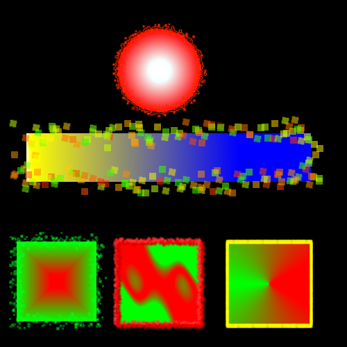

Assignment004Ca
Create the following five shapes using the same stroke. Use the Properties Panel to change the stroke type. There are many options, but use the ones below for this assignment.
Right-click the image and view the properties to determine your canvas size!
- Circle - Fluid Splatter Stroke
- Rectangle - Squares Stroke
- Square - Paint Splatter Stroke
- Square - Vicious Alien Paint Stroke
- Square - Colored Pencil Stroke
